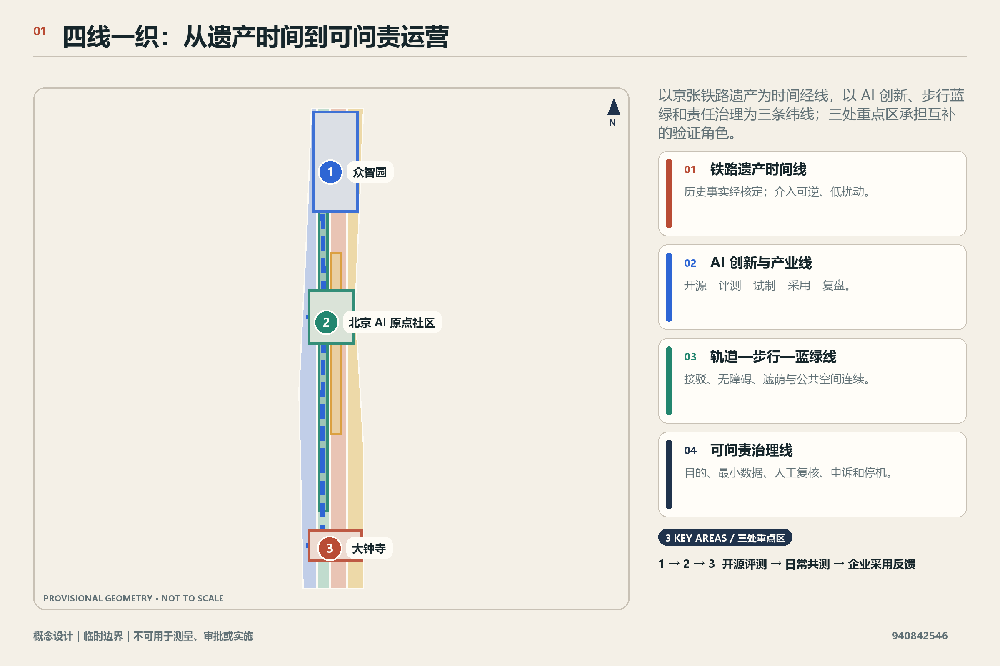
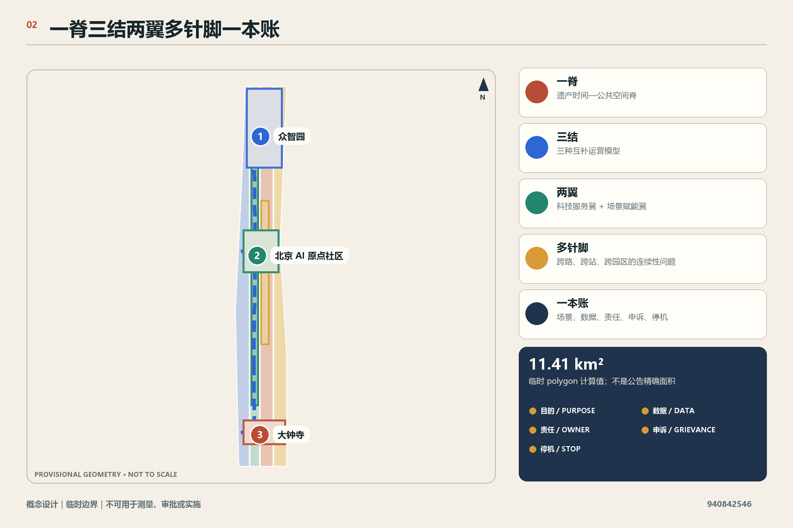
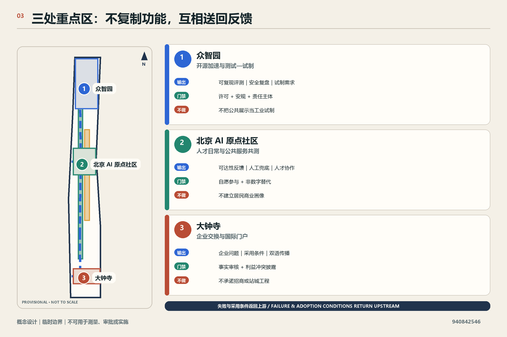
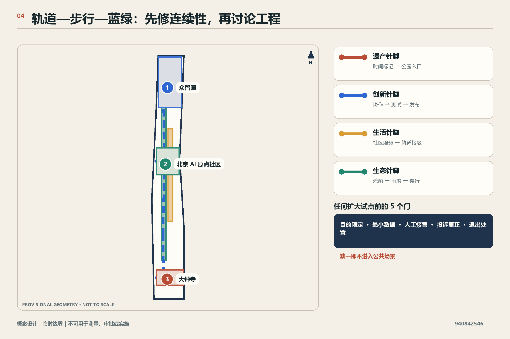
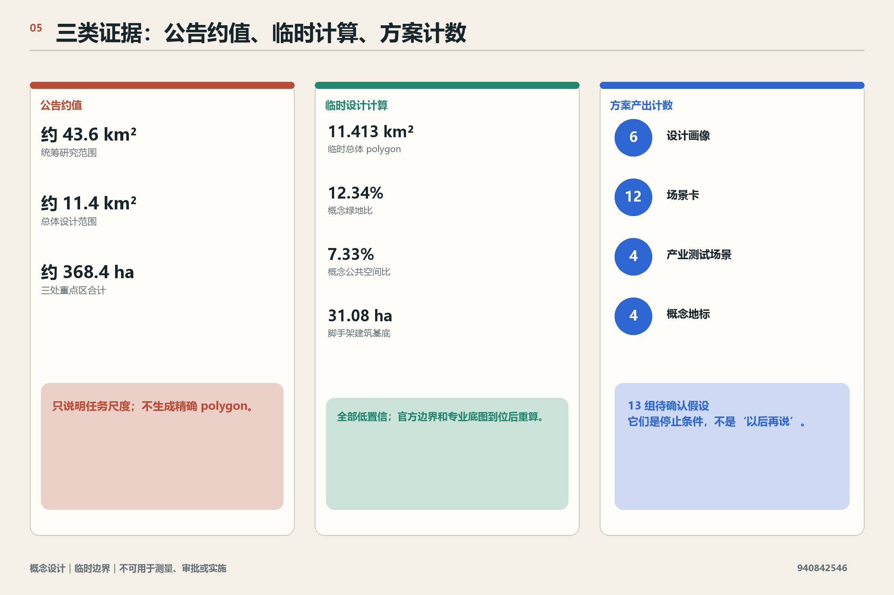

总览地图与三层范围
以统筹研究、总体设计、重点详细设计三种尺度读取同一四线系统；临时边界不用于测量。
百年京张 AI 创新带的四线共生系统
概念设计｜临时边界｜不可用于测量、审批或实施方案把京张遗产、AI 创新、步行蓝绿和问责治理作为同一系统的四条不可拆分的线；任何一条不成立，相关试点都不扩大。
历史事实经核定；介入可逆、低扰动。
开源—评测—试制—采用—复盘。
接驳、无障碍、遮荫与公共空间连续。
目的、最小数据、人工复核、申诉和停机。



12 个场景均需目的、最小数据、人工复核、投诉更正、停机与退出。

官方边界、专业底图或责任主体缺失时，方案停在概念与可逆原型阶段。

以统筹研究、总体设计、重点详细设计三种尺度读取同一四线系统；临时边界不用于测量。
三处重点区角色、四类概念分区与建筑原型只表达设计关系，不替代现状调查或法定控规。
一条南北概念脊与三条横向针脚表达连续性目标，不构成道路、轨道或工程线位。
8 个概念项目包与 12 个场景均绑定证据前置、人工接管、申诉、停机和退出。
公告、任务书、专业深度与结构化证据逐项登记；最终状态只以 manifest.json 与 self_check.json 的确定性结果为准。
来源登记区分正式公告、标准、本地快照和临时边界；13 项假设保留官方资料、专业评估和公众参与的触发条件。